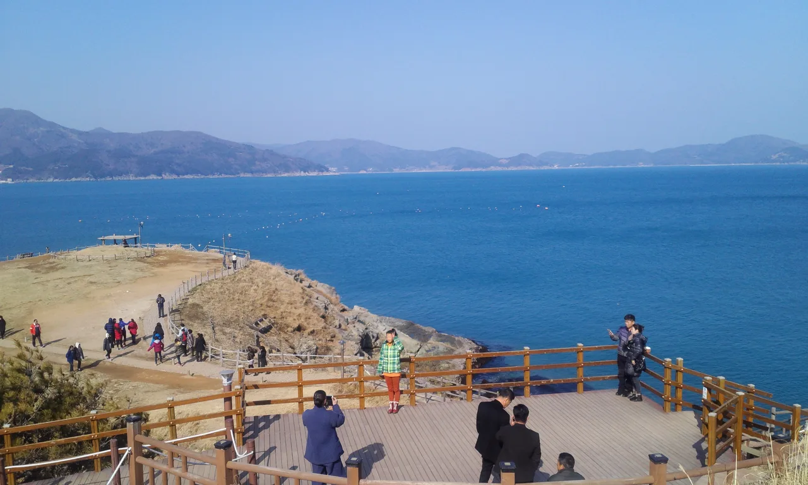
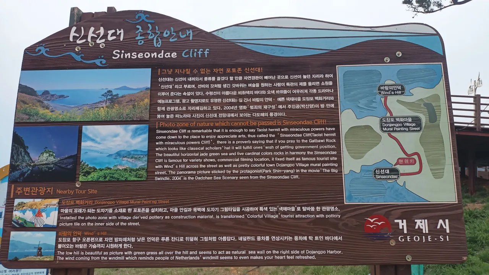
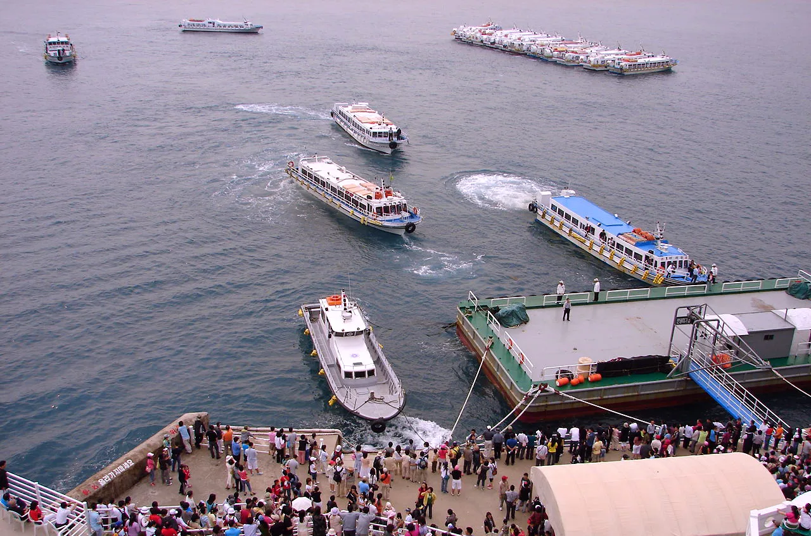
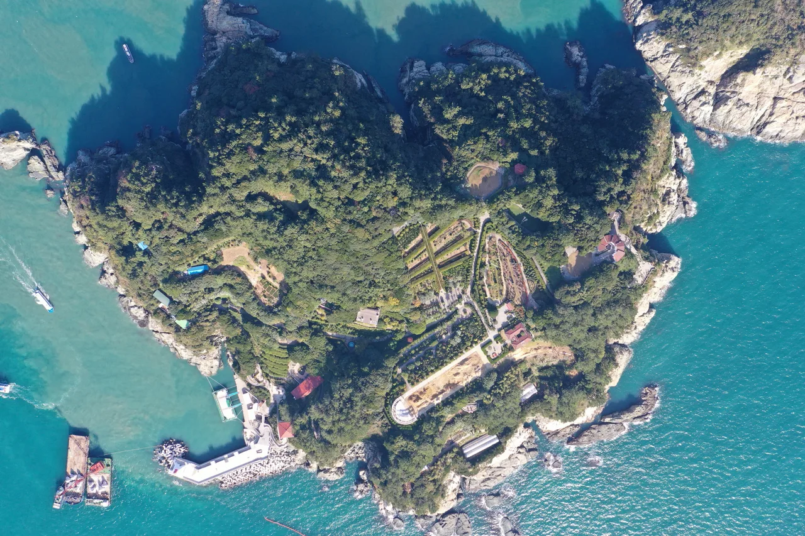
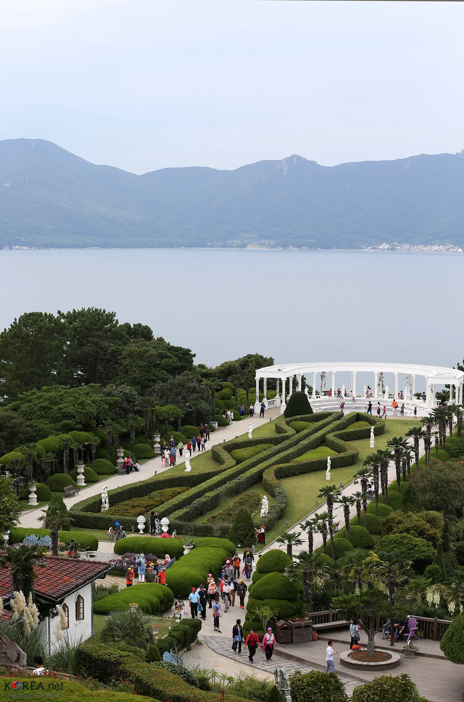
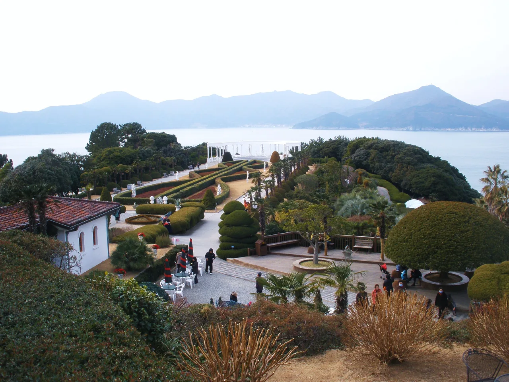
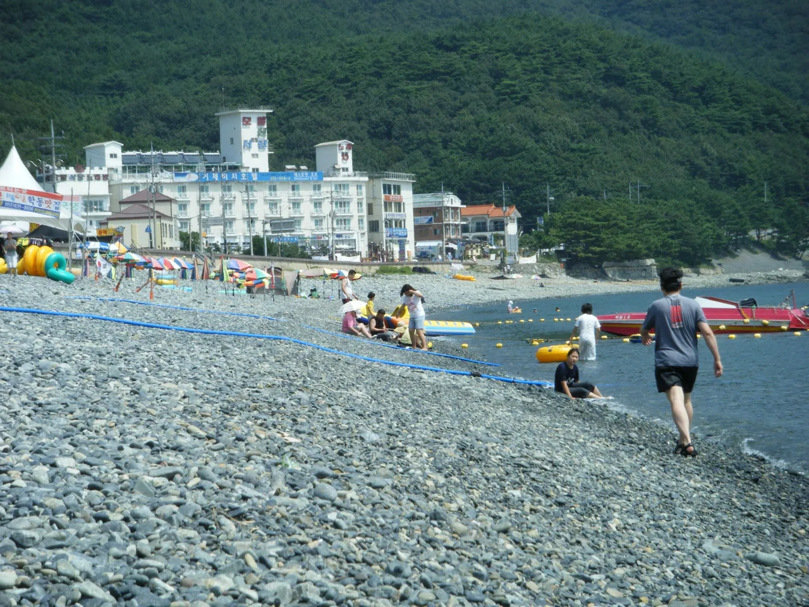
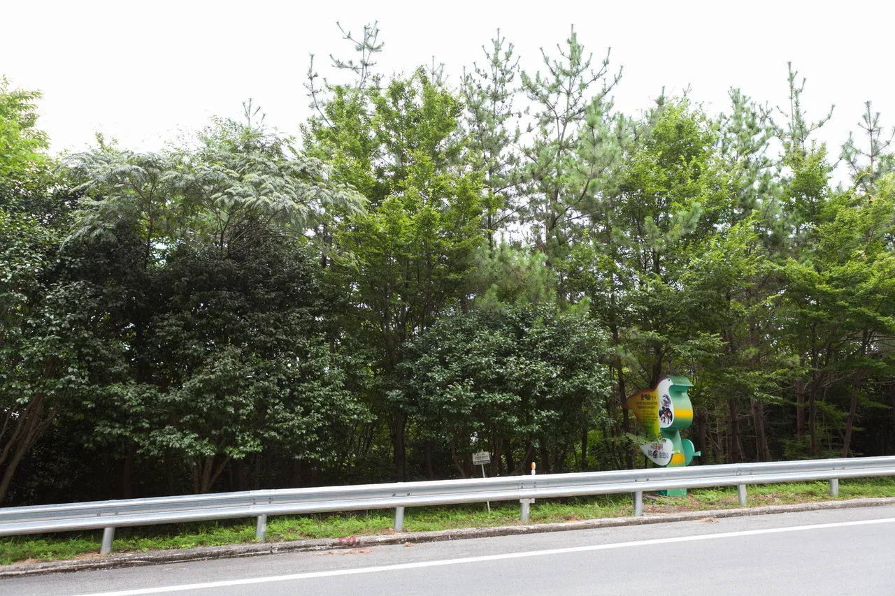

▲ 거제 남부면 해안. 이 절경이 '바람의 언덕'이 유명해진 이유다 ⓒ Wikimedia Commons

▲ 신선대 전망대에 세워진 안내판. 바람의 언덕(Wind's Hill)이 도장포 항구 오른편 언덕이라는 사실이 지도에 그대로 나와 있다 ⓒ Wikimedia Commons
1. 검색부터 꼬인다 — 파주와 거제, 이름만 같은 두 곳
포털에 '바람의 언덕'을 검색하면 경기 파주 임진각 평화누리공원의 바람의 언덕이 먼저 나옵니다. 대형 잔디 언덕에 형형색색 바람개비가 꽂혀 있는 그 사진, 아마 한 번쯤 보셨을 겁니다.
하지만 거제에도 '바람의 언덕'이 있습니다. 경상남도 거제시 남부면 갈곶리, 도장포 마을 옆 해안 언덕입니다. 둘은 이름만 같을 뿐 위치도, 생긴 지 얼마나 됐는지도, 풍경의 성격도 전혀 다른 별개의 장소입니다.
파주 쪽은 평화누리공원 안의 인공 조형물에 가깝고, 거제 쪽은 실제 해안 지형입니다. 도장포 항구를 자연 방파제처럼 감싸는 낮은 언덕에 2009년 풍차 한 기를 세운 것이 지금의 바람의 언덕입니다. 검색 결과에 헷갈려 파주만 다녀오고 거제 쪽 존재를 모르는 여행자가 여전히 많습니다.
2. 도장포 항구 옆, 자연 방파제 같은 이 언덕
거제 바람의 언덕은 도장포 마을 오른편에서 항구를 감싸듯 솟은 낮은 구릉입니다. 정확한 주소는 거제시 남부면 갈곶리 산14-47번지로, 해금강으로 가는 길에서 왼쪽으로 빠지면 나오는 도장포 마을 초입에 있습니다.
언덕 전체가 푸른 잔디로 덮여 있어 멀리서 보면 그림 같다는 설명이 많습니다. 여기에 네덜란드 풍차를 연상시키는 목조 풍차가 서 있고, 탁 트인 바다에서 불어오는 바람이 계절을 가리지 않고 강하게 붑니다. 이름값을 하는 곳이라 옷차림에 신경 쓰라는 조언이 따라붙습니다.
▲ 바람의 언덕과 신선대 일대에서는 다도해 특유의 겹겹이 이어진 섬 능선을 볼 수 있다 ⓒ Wikimedia Commons
길 하나를 사이에 두고 신선대가 마주 보고 있다는 점도 중요합니다. 신선대는 갓바위처럼 생긴 기암과 비취색 바다가 어우러진 전망대로, 2004년 영화 '범죄의 재구성' 촬영지로 알려지며 함께 명소가 됐습니다. 바람의 언덕만 보고 돌아가면 절반만 본 셈입니다.
3. 무료인데 왜 다들 헤맬까 — 주차와 접근
바람의 언덕 입장료는 무료입니다. 연중무휴 24시간 개방된 야외 언덕이라 매표소도, 운영시간 제한도 없습니다.
문제는 주차입니다. 도장포 마을 입구에 무료 주차장이 있지만 규모가 크지 않아 주말과 성수기에는 금세 찹니다. 언덕 바로 앞에는 일 3,000원 수준의 소규모 유료 주차장도 운영되는데, 이쪽에서 언덕 정상까지는 도보로 약 10~15분이 걸립니다.
| 주차장 | 요금 | 언덕까지 도보 | 비고 |
|---|---|---|---|
| 도장포 마을 입구 주차장 | 무료 | 약 5분 | 주말·성수기 만차 잦음 |
| 언덕 앞 소규모 주차장 | 1일 약 3,000원 | 약 10~15분 | 회전이 빨라 자리 확보 쉬움 |
정리하면 이렇습니다. 오전 일찍 도착할 자신이 없다면 처음부터 유료 주차장을 염두에 두는 편이 시간을 법니다. 무료 주차장에서 자리를 찾아 헤매는 시간에 이미 유료 주차장에 도착해 있는 편이 낫습니다.
4. 계절이 만드는 사진 — 유채꽃과 억새, 그리고 사시사철 바람개비
바람의 언덕은 계절마다 표정이 바뀝니다. 봄에는 언덕 주변으로 유채꽃이 피어 초록 잔디와 대비를 이루고, 거제 일대 유채꽃은 보통 4월에 절정을 맞는다고 소개됩니다.
가을에는 억새가 바람에 눕는 장면이 이 언덕의 또 다른 얼굴로 꼽힙니다. 이름 그대로 바람이 강한 지형이라, 억새 명소로 소개되는 다른 지역들과 비교해도 바람이 만드는 물결이 유독 크게 출렁인다는 평이 많습니다. 다만 억새의 정확한 절정 시기는 그해 기후에 따라 달라질 수 있어 방문 직전 현지 소식을 확인하는 편이 안전합니다.
풍차와 바람개비는 계절과 무관하게 사시사철 이 언덕의 상징입니다. 어느 계절에 가더라도 바다를 배경으로 한 풍차 사진 한 장은 남길 수 있는 구조입니다.
5. 바람의 언덕 다음 코스 — 외도 보타니아 배편
바람의 언덕과 신선대를 본 다음 코스로 가장 많이 묶이는 곳이 외도 보타니아입니다. 다만 도장포에서 바로 배를 타고 가는 구조가 아니라, 장승포항·지세포항·구조라항 등 거제 여러 선착장에서 출발하는 유람선을 예약해 이동해야 합니다.
| 구분 | 요금 | 비고 |
|---|---|---|
| 입장료(성인) | 약 11,000원 | 섬 하선 후 매표소에서 별도 결제 |
| 입장료(중·고생) | 약 8,000원 | |
| 입장료(어린이) | 약 5,000원 | |
| 유람선 왕복 승선료 | 선착장별 상이(2만 원대) | 입장료와 별도, 사전 예약 권장 |
배로 섬까지 이동하는 데는 약 25~30분이 걸립니다. 하선 후에는 지중해풍 정원과 조각상, 야자수길을 따라 걷는 산책형 코스로 이어집니다. 평일 기준 오전 9시 30분, 11시, 오후 1시, 2시 30분 전후로 배가 나가는 경우가 많지만 선착장과 요일에 따라 시간표가 달라지니, 방문 전 예약 사이트에서 확인이 필수입니다.

▲ 외도 선착장에 도착한 유람선들. 배편은 도장포가 아니라 장승포·지세포 등 다른 항구에서 출발한다 ⓒ Wikimedia Commons

▲ 위에서 본 외도. 섬 전체가 정원으로 조성돼 있어 항공 사진으로 보면 구조가 한눈에 들어온다 ⓒ Wikimedia Commons

▲ 외도 보타니아의 정원과 회랑. 산책로를 따라 걸으며 바다 전망을 함께 즐기는 구조다 ⓒ Wikimedia Commons

▲ 겨울철 외도 보타니아. 계절과 무관하게 사계절 운영되지만 조경의 인상은 계절마다 다르다 ⓒ Wikimedia Commons
6. 학동 흑진주 몽돌해변과 동백숲까지 묶는 반나절 동선
바람의 언덕에서 차로 20분 남짓이면 학동 흑진주 몽돌해변에 닿습니다. 검은 몽돌로 이루어진 해변으로 길이 1.2km, 폭 50m 규모이며, 파도가 몽돌을 굴리며 내는 소리가 우리나라 자연의 소리 100선에 선정될 정도로 알려져 있습니다. 주차는 무료입니다.

▲ 학동 흑진주 몽돌해변. 검은 몽돌 위로 파도가 밀려 나가는 소리 때문에 '흑진주'라는 이름이 붙었다 ⓒ Wikimedia Commons
해변 뒤로는 천연기념물로 지정된 야생 동백나무 숲이 있습니다. 팔색조 번식지로도 알려져 있으며, 동백꽃은 2월 하순부터 피기 시작해 3월 중순 무렵 만개한 모습을 볼 수 있다고 소개됩니다.

▲ 학동리 동백나무 숲 및 팔색조 번식지 입구. 해변과 함께 묶어 걷기 좋은 구간이다 ⓒ Wikimedia Commons
| 시간대 | 배치 | 이유 |
|---|---|---|
| 오전 | 바람의 언덕 · 신선대 | 이른 시각일수록 주차가 수월 |
| 점심 전후 | 외도 보타니아(사전 예약 배편) | 배 시간에 맞춰 선착장 이동 필요 |
| 오후 | 학동 흑진주 몽돌해변 · 동백숲 | 차로 짧게 이동, 무료 주차 |
7. 자차 여행자를 위한 정리
첫째, '바람의 언덕'을 검색할 때는 지역명을 함께 넣으십시오. 그냥 검색하면 파주 결과가 먼저 뜨는 경우가 많습니다. '거제 바람의 언덕'으로 검색해야 헷갈리지 않습니다.
둘째, 주차는 여유 있게 계산하십시오. 무료 주차장에 기대를 걸었다가 자리가 없으면 유료 주차장으로 넘어가는 계획을 미리 세워 두는 편이 낫습니다.
셋째, 외도 보타니아는 미리 예약하십시오. 도장포에서 곧바로 배를 탈 수 있는 구조가 아니라 다른 선착장으로 이동해야 하고, 배편은 선착순이 아니라 예약제로 운영되는 경우가 많습니다.
넷째, 신선대를 건너뛰지 마십시오. 바람의 언덕 바로 건너편이라 이동 부담이 거의 없는데도 놓치고 돌아가는 경우가 많습니다.
정리하면 이렇습니다. 거제 바람의 언덕은 파주의 그것과 이름만 같을 뿐, 항구를 감싸는 지형과 신선대·외도·학동으로 이어지는 동선까지 갖춘 별개의 여행지입니다. 검색 결과에 속지만 않으면, 반나절로 채우기에 부족함이 없는 코스가 나옵니다.